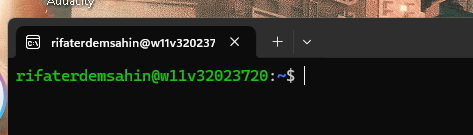
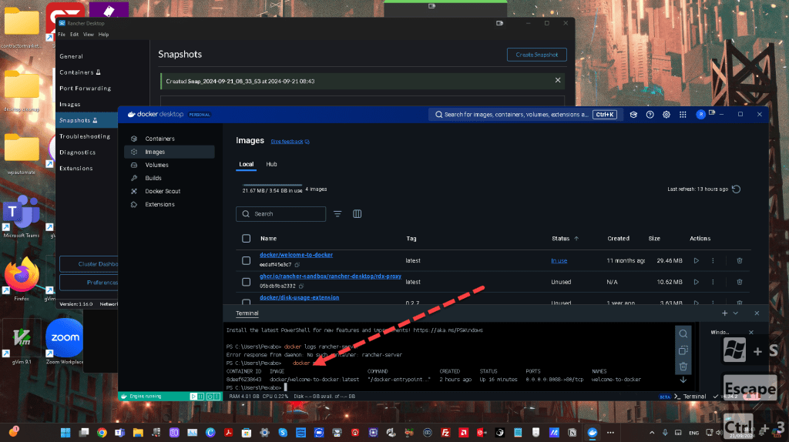

🛑 Catch-22: Setting Up Rancher Learning Environment on Windows 11 🖥️
Setting up a Rancher learning environment on Windows 11 can feel like you're trapped in a Catch-22 situation. One challenge leads to another, but it's all part of the learning journey! In this post, I’ll share my personal experience, tips, and roadblocks while tackling this setup. Grab a coffee, and let’s dive in! ☕
🛠️ The Setup Process
1. Installing WSL 2 🐧
To run Rancher on Windows, you need WSL 2 (Windows Subsystem for Linux) to get a Linux kernel on your Windows machine. Here’s the rub: WSL 2 requires Hyper-V, but enabling that might interfere with VirtualBox or other virtualization tools you have on your system. This is where you’ll find yourself in a loop of:
-
Trying to enable Hyper-V 🔄
-
Discovering your existing setup with VirtualBox doesn't play well with it 🛑
-
Going back to disable Hyper-V to restore your original settings 😤
2. Docker Desktop 🐋
Rancher requires Docker, and on Windows, you’ll need Docker Desktop. Sounds simple? Well, another layer of complexity! Docker Desktop requires WSL 2 to run efficiently, and you need to ensure the correct distribution is used inside Docker settings.

🚨 Pro Tip: Ensure WSL 2 is installed and running before installing Docker Desktop. If you mess up this order, expect Docker to throw cryptic errors, leaving you scratching your head. 🤯
3. Launching Rancher 🚀
Once Docker is up and running, you’re all set to launch Rancher, right? Not so fast! Rancher is resource-intensive, so make sure you have enough CPU and RAM allocated in Docker Desktop. Otherwise, you’ll be stuck waiting for Rancher containers that just don’t start. 💤
Screenshot Pause 📸: At this point, take a screenshot of Docker Desktop showing your Rancher containers either starting successfully or failing miserably—because we’ve all been there! 😅
Here's an example:
4. Kubernetes (K8s) Configurations 🔧
Rancher provides an intuitive UI for Kubernetes, but the backend configurations might be tricky on Windows. After all the hustle with Docker, you’ll find the kubeconfig setup to access your cluster from kubectl might not work out of the box. If you're using PowerShell, make sure the environment variables are properly set. 🧑💻
🤔 What I Learned (The Hard Way)
-
Patience is a virtue. Seriously, setting up this environment is as much a test of patience as it is a technical exercise. Expect to troubleshoot.
-
WSL 2 is a game-changer. But it can also be a game-stopper if not configured correctly alongside your other virtualization needs.
-
Kubernetes on Windows is still an evolving journey. You’ll find more resources geared toward Linux or macOS, but with persistence, Windows setups can work too.
💡 Pro Tips for the Next Round
-
Always keep Docker Desktop and WSL 2 updated to the latest versions to avoid unexpected incompatibility issues.
-
Create a checklist 📝 before setting up Rancher to ensure you’ve enabled everything required and don’t accidentally leave out any critical steps.
🔗 Connect with Me:
-
💼 LinkedIn: https://www.linkedin.com/in/rifaterdemsahin/
-
🐦 Twitter: https://x.com/rifaterdemsahin
-
🎥 YouTube: https://www.youtube.com/@RifatErdemSahin
-
💻 GitHub: https://github.com/rifaterdemsahin
That’s all for now! Setting up a Rancher learning environment on Windows is a bumpy ride, but the destination is worth it. Good luck, and remember—you’ve got this! 💪
To troubleshoot the issue where Rancher containers and snapshots are showing "Sand Time" (likely indicating a stalled or hung state) and network status is "on," follow these steps to resolve and diagnose the problem:
1. Check Container Logs:
- First, verify the logs of the affected containers using the Rancher UI or via
kubectl/docker logs. This will give insight into whether there is a specific issue causing the container to hang.
In Rancher UI: Go to Workloads > Pod > Logs.
-
With kubectl: Run
kubectl logs <pod-name>. -
With Docker: Run
docker logs <container-id>.
2. Check for Resource Constraints:
-
Ensure that the host machine running Rancher has adequate resources (CPU, memory, and storage). A container might be stuck in a "sand time" state if it is experiencing resource starvation.
-
You can monitor resource utilization from the Rancher UI under Cluster Management > Node and check CPU and Memory usage.
3. Investigate Networking Issues:
- Even though the network status is "on," it could still be misconfigured or congested. Check the following:
CNI plugins: Ensure that the network overlay (e.g., Calico, Flannel) is functioning properly. You can check CNI logs.
-
DNS resolution: Run
kubectl exec -it <pod> -- nslookup <service>to verify DNS is resolving correctly within the cluster. -
Network connectivity: Test network connectivity using
pingorcurlinside the container or pod.
4. Restart Problematic Pods/Containers:
- If specific containers are stuck, restarting them might help resolve the issue:
For Kubernetes Pods: kubectl delete pod <pod-name> (The pod should restart automatically).
- For Docker containers:
docker restart <container-id>.
5. Check Volume and Storage Issues:
- If snapshots are involved, check the storage volume health:
Verify that the underlying storage provider (e.g., NFS, Ceph, or another PV provider) is healthy.
- Look at the storage volume for any errors that may be causing the snapshot to hang.
6. Update or Reconfigure Rancher:
-
If containers and snapshots are consistently hanging, make sure that your Rancher, Kubernetes, and Docker versions are up to date.
-
You may also want to review Rancher logs (
docker logs rancher-server) for any internal Rancher errors.
7. Check for Pod Pending Status:
- If your containers or pods are stuck in a pending state, it could indicate scheduling problems. Run:
kubectl describe pod <pod-name> to find if there are any scheduling issues due to taints, tolerations, or resource limits.
8. Look for Cluster-wide Issues:
- If the issue is cluster-wide, check for general health and status of the Kubernetes cluster by running:
kubectl get nodes
-
kubectl get events -
Look for any errors or warnings that might indicate a larger issue with your infrastructure.
9. Increase Debugging and Logging Levels:
- If none of the above works, increase the logging level of Rancher, Docker, or Kubernetes to gather more detailed diagnostics and debug logs.
After trying these steps, the root cause should become clearer, helping you resolve the issue.
It seems that there is no container named rancher-server running on your system. Here are a few things you can do to troubleshoot further:
1. List All Docker Containers
First, verify if the Rancher container is running. Run the following command to list all running Docker containers:
docker ps

If you don't see any Rancher containers running, try listing all containers (including stopped ones):
docker ps -a
Check if you see a container related to Rancher (it could have a different name).
2. Start Rancher Server (If Stopped)
If the Rancher container appears in the list but is stopped, you can try starting it:
docker start
Replace <container-id> with the actual container ID from the docker ps -a command.
3. Check for Misconfiguration
If Rancher is not running, you may need to reinstall or verify the installation. Ensure the proper Rancher container is deployed. To deploy Rancher again (if necessary), use the following command:
docker run -d --restart=unless-stopped \
-p 80:80 -p 443:443 \
rancher/rancher:latest
4. Verify Docker Setup
If no Rancher containers appear, verify that Docker is set up correctly. Make sure that Docker itself is functioning by running:
docker version
docker info
This will confirm whether Docker is correctly installed and operational on your system.
5. Check Rancher Installation Method
If you are using a different installation method (e.g., Helm for Kubernetes), ensure that you’re checking in the correct environment. For example, if Rancher was deployed in a Kubernetes cluster, check Rancher pods using:
kubectl get pods -n cattle-system
6. Check System for Other Installations
If the Rancher server is not found in Docker, double-check if it's installed elsewhere, such as a VM or a cloud platform, and not running locally on Docker.
After verifying these steps, you should have more information about whether the Rancher container is missing or stopped, or if there's a need to reinstall Rancher.
Imported from rifaterdemsahin.com · 2024